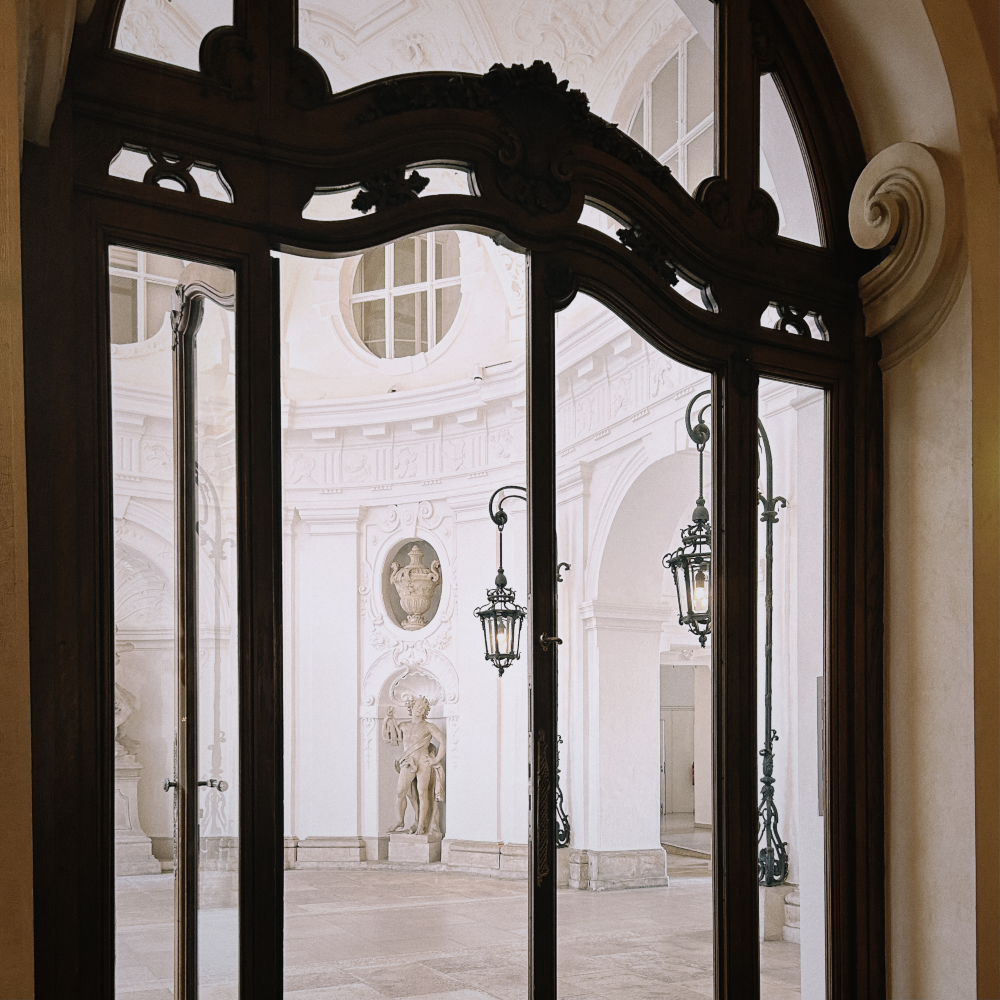

Zayneb Cherif is a photographer based in New York.
Shooting on both film and digital, Zayneb works primarily with the Olympus Mju — a compact point-and-shoot known for its sharp lens and ease of use on the go. Her film work spans a range of stocks including Kodak Portra, testing each for its particular response to light, color, and grain.
The images in this portfolio are made across the streets, spaces, and people of everyday life — candid, unhurried, and attentive to small moments. Each series reflects a different context: street, travel, people, and place.
Available for projects, collaborations, and commissions. Based in New York, open to working wherever the work takes her.
